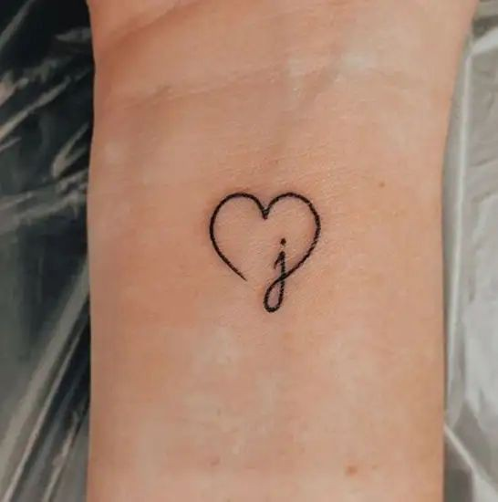
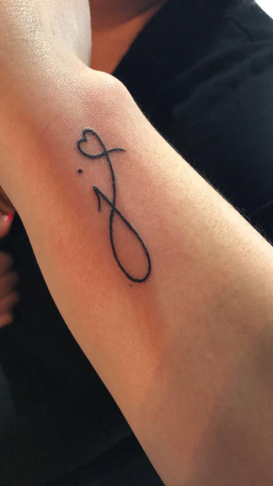
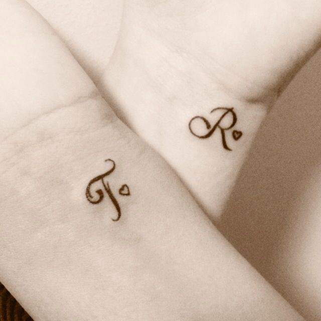
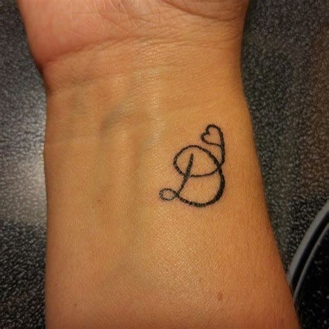

Lettering tattoos
About Lettering tattoos
- Lettering tattoos are a fantastic way to express personal significance through meaningful words, quotes, names, or dates.
Characteristics
- Font Choices: The style of the font can drastically change the look and feel of the tattoo. Fonts can range from elegant cursive and calligraphy to bold, block letters, gothic styles, and modern typography.
- Customization: Lettering tattoos are highly customizable, allowing you to choose the size, layout, and additional decorative elements like flourishes or symbols.
- Placement: They can be placed almost anywhere on the body, commonly on the wrist, forearm, ribcage, back, or collarbone.



